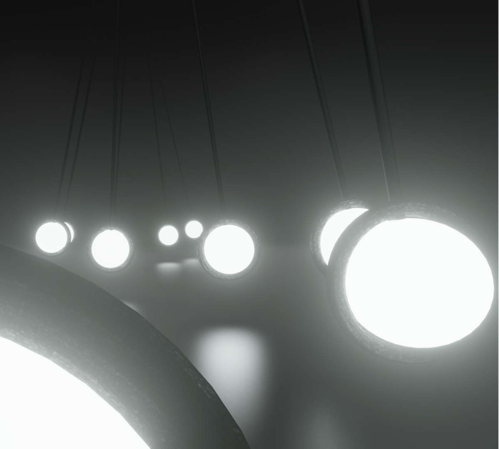

Le pendule
Animation 3D - 2023
Projet étudiant
Le court-métrage «Le pendule» est un projet étudiant de création. Le but était de montrer nos talents d'animateur et de modélisateur en moins de 45 secondes. Le défi principal fut les jeux de caméra.
